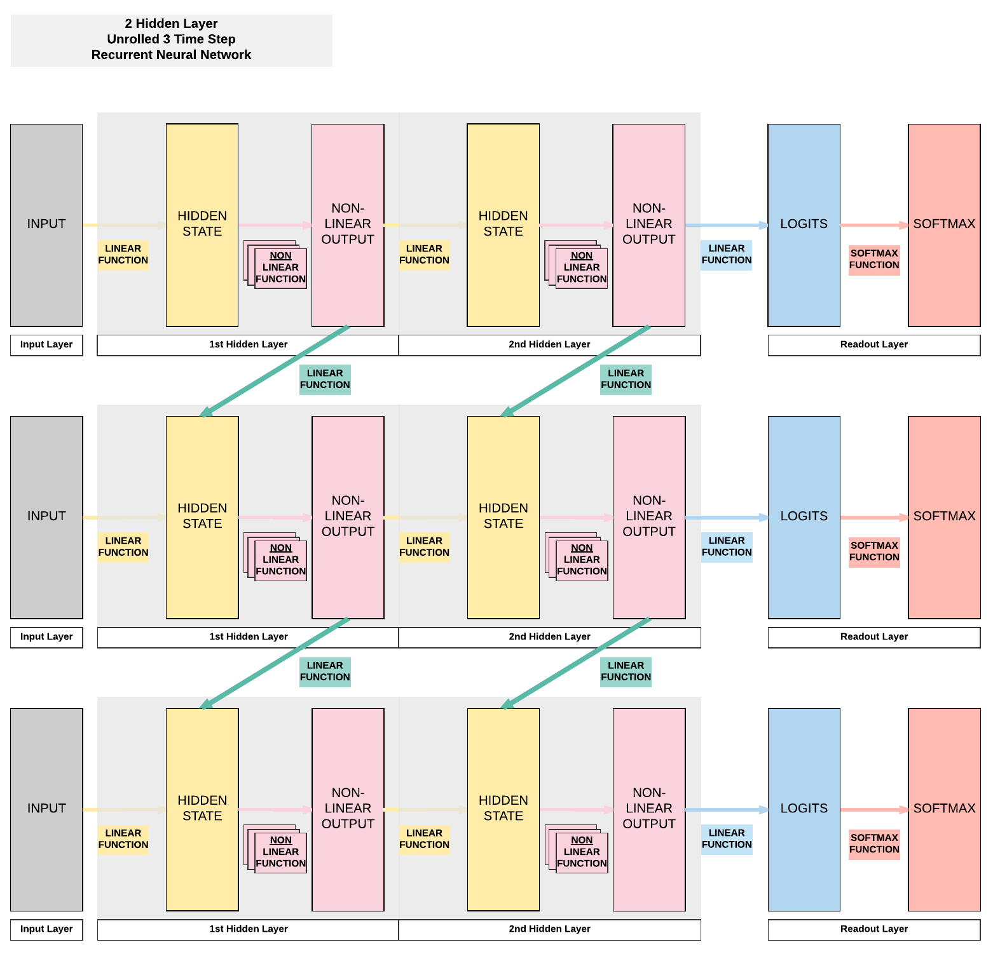
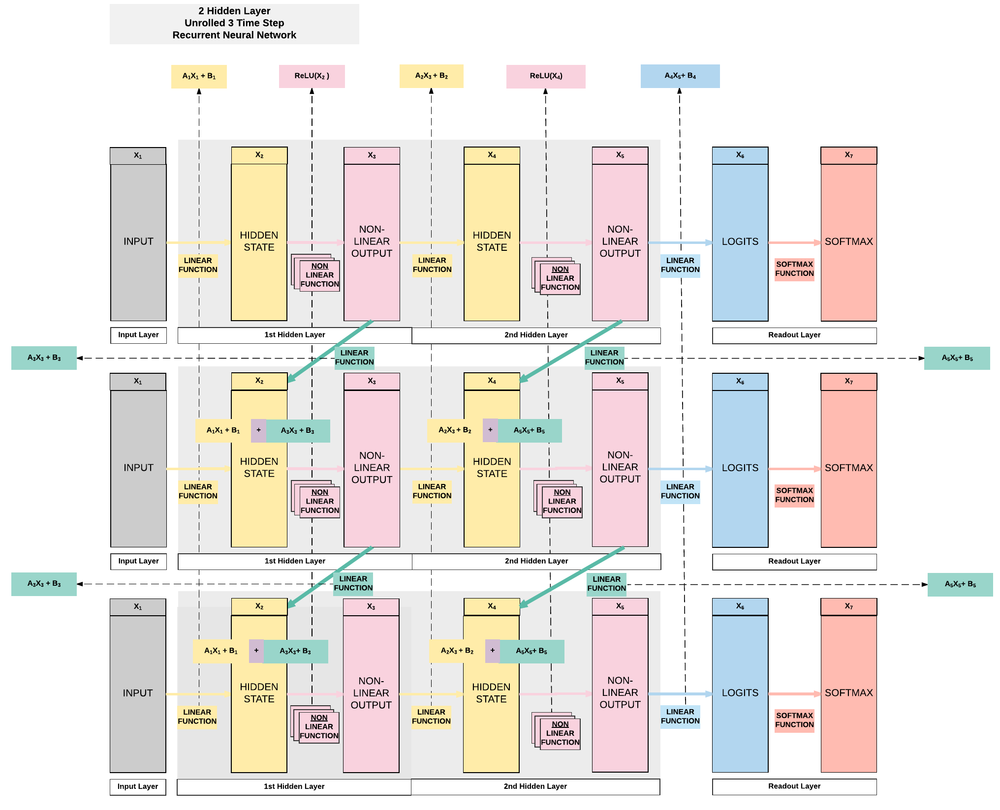

Recurrent Neural Network with PyTorch¶
Run Jupyter Notebook
You can run the code for this section in this jupyter notebook link.
About Recurrent Neural Network¶
Feedforward Neural Networks Transition to 1 Layer Recurrent Neural Networks (RNN)¶
- RNN is essentially an FNN but with a hidden layer (non-linear output) that passes on information to the next FNN
- Compared to an FNN, we've one additional set of weight and bias that allows information to flow from one FNN to another FNN sequentially that allows time-dependency.
- The diagram below shows the only difference between an FNN and a RNN.

2 Layer RNN Breakdown¶

Building a Recurrent Neural Network with PyTorch¶
Model A: 1 Hidden Layer (ReLU)¶
- Unroll 28 time steps
- Each step input size: 28 x 1
- Total per unroll: 28 x 28
- Feedforward Neural Network input size: 28 x 28
- 1 Hidden layer
- ReLU Activation Function

Steps¶
- Step 1: Load Dataset
- Step 2: Make Dataset Iterable
- Step 3: Create Model Class
- Step 4: Instantiate Model Class
- Step 5: Instantiate Loss Class
- Step 6: Instantiate Optimizer Class
- Step 7: Train Model
Step 1: Loading MNIST Train Dataset¶
Images from 1 to 9
Looking into the MNIST Dataset
import torch import torch.nn as nn import torchvision.transforms as transforms import torchvision.datasets as dsets
train_dataset = dsets.MNIST(root='./data', train=True, transform=transforms.ToTensor(), download=True) test_dataset = dsets.MNIST(root='./data', train=False, transform=transforms.ToTensor())
We would have 60k training images of size 28 x 28 pixels.
print(train_dataset.train_data.size())
print(train_dataset.train_labels.size())
Here we would have 10k testing images of the same size, 28 x 28 pixels.
print(test_dataset.test_data.size())
print(test_dataset.test_labels.size())
torch.Size([60000, 28, 28]) torch.Size([60000]) torch.Size([10000, 28, 28]) torch.Size([10000])
Step 2: Make Dataset Iterable¶
Creating iterable objects to loop through subsequently
batch_size = 100 n_iters = 3000 num_epochs = n_iters / (len(train_dataset) / batch_size) num_epochs = int(num_epochs) train_loader = torch.utils.data.DataLoader(dataset=train_dataset, batch_size=batch_size, shuffle=True) test_loader = torch.utils.data.DataLoader(dataset=test_dataset, batch_size=batch_size, shuffle=False)
Step 3: Create Model Class¶
1 Layer RNN
class RNNModel(nn.Module): def __init__(self, input_dim, hidden_dim, layer_dim, output_dim): super(RNNModel, self).__init__() # Hidden dimensions self.hidden_dim = hidden_dim # Number of hidden layers self.layer_dim = layer_dim # Building your RNN # batch_first=True causes input/output tensors to be of shape # (batch_dim, seq_dim, input_dim) # batch_dim = number of samples per batch self.rnn = nn.RNN(input_dim, hidden_dim, layer_dim, batch_first=True, nonlinearity='relu') # Readout layer self.fc = nn.Linear(hidden_dim, output_dim) def forward(self, x): # Initialize hidden state with zeros # (layer_dim, batch_size, hidden_dim) h0 = torch.zeros(self.layer_dim, x.size(0), self.hidden_dim).requires_grad_() # We need to detach the hidden state to prevent exploding/vanishing gradients # This is part of truncated backpropagation through time (BPTT) out, hn = self.rnn(x, h0.detach()) # Index hidden state of last time step # out.size() --> 100, 28, 10 # out[:, -1, :] --> 100, 10 --> just want last time step hidden states! out = self.fc(out[:, -1, :]) # out.size() --> 100, 10 return out
Step 4: Instantiate Model Class¶
- 28 time steps
- Each time step: input dimension = 28
- 1 hidden layer
- MNIST 1-9 digits \rightarrow output dimension = 10
Instantiate model class and assign to an object
input_dim = 28 hidden_dim = 100 layer_dim = 1 output_dim = 10
model = RNNModel(input_dim, hidden_dim, layer_dim, output_dim)
Step 5: Instantiate Loss Class¶
- Recurrent Neural Network: Cross Entropy Loss
- Convolutional Neural Network: Cross Entropy Loss
- Feedforward Neural Network: Cross Entropy Loss
- Logistic Regression: Cross Entropy Loss
- Linear Regression: MSE
Cross Entropy Loss for Classification Task
criterion = nn.CrossEntropyLoss()
Cross Entropy vs MSE
Take note that there are cases where RNN, CNN and FNN use MSE as a loss function.
We use cross entropy for classification tasks (predicting 0-9 digits in MNIST for example).
And we use MSE for regression tasks (predicting temperatures in every December in San Francisco for example).
Step 6: Instantiate Optimizer Class¶
- Simplified equation
- \theta = \theta - \eta \cdot \nabla_\theta
- \theta: parameters (our tensors with gradient accumulation abilities)
- \eta: learning rate (how fast we want to learn)
- \nabla_\theta: gradients of loss with respect to the model's parameters
- \theta = \theta - \eta \cdot \nabla_\theta
- Even simplier equation
parameters = parameters - learning_rate * parameters_gradients- At every iteration, we update our model's parameters
learning_rate = 0.01 optimizer = torch.optim.SGD(model.parameters(), lr=learning_rate)
Parameters In-Depth¶
- Input to Hidden Layer Affine Function
- A1, B1
- Hidden Layer to Output Affine Function
- A2, B2
- Hidden Layer to Hidden Layer Affine Function
- A3, B3

Total groups of parameters
We should have 6 groups as shown above.
len(list(model.parameters()))
6
Input to Hidden Weight
Remember we defined our hidden layer to have a size of 100. Because our input is a size of 28 at each time step, this gives rise to a weight matrix of 100 x 28.
# Input --> Hidden (A1) list(model.parameters())[0].size()
torch.Size([100, 28])
Input to Hidden Bias
# Input --> Hidden BIAS (B1) list(model.parameters())[2].size()
torch.Size([100])
Hidden to Hidden
# Hidden --> Hidden (A3) list(model.parameters())[1].size()
torch.Size([100, 100])
Hidden to Hidden Bias
# Hidden --> Hidden BIAS(B3) list(model.parameters())[3].size()
torch.Size([100])
Hidden to Output
# Hidden --> Output (A2) list(model.parameters())[4].size()
torch.Size([10, 100])
Hidden to Output Bias
# Hidden --> Output BIAS (B2) list(model.parameters())[5].size()
torch.Size([10])
Step 7: Train Model¶
- Process
- Convert inputs/labels to tensors with gradient accumulation abilities
- RNN Input: (1, 28)
- CNN Input: (1, 28, 28)
- FNN Input: (1, 28*28)
- Clear gradient buffets
- Get output given inputs
- Get loss
- Get gradients w.r.t. parameters
- Update parameters using gradients
parameters = parameters - learning_rate * parameters_gradients
- REPEAT
- Convert inputs/labels to tensors with gradient accumulation abilities
Same 7 step process for training models
# Number of steps to unroll seq_dim = 28 iter = 0 for epoch in range(num_epochs): for i, (images, labels) in enumerate(train_loader): model.train() # Load images as tensors with gradient accumulation abilities images = images.view(-1, seq_dim, input_dim).requires_grad_() # Clear gradients w.r.t. parameters optimizer.zero_grad() # Forward pass to get output/logits # outputs.size() --> 100, 10 outputs = model(images) # Calculate Loss: softmax --> cross entropy loss loss = criterion(outputs, labels) # Getting gradients w.r.t. parameters loss.backward() # Updating parameters optimizer.step() iter += 1 if iter % 500 == 0: model.eval() # Calculate Accuracy correct = 0 total = 0 # Iterate through test dataset for images, labels in test_loader: # Load images to a Torch tensors with gradient accumulation abilities images = images.view(-1, seq_dim, input_dim) # Forward pass only to get logits/output outputs = model(images) # Get predictions from the maximum value _, predicted = torch.max(outputs.data, 1) # Total number of labels total += labels.size(0) # Total correct predictions correct += (predicted == labels).sum() accuracy = 100 * correct / total # Print Loss print('Iteration: {}. Loss: {}. Accuracy: {}'.format(iter, loss.item(), accuracy))
Iteration: 500. Loss: 2.301494836807251. Accuracy: 12 Iteration: 1000. Loss: 2.2986037731170654. Accuracy: 14 Iteration: 1500. Loss: 2.278566598892212. Accuracy: 18 Iteration: 2000. Loss: 2.169614315032959. Accuracy: 21 Iteration: 2500. Loss: 1.1662731170654297. Accuracy: 51 Iteration: 3000. Loss: 0.9290509223937988. Accuracy: 71
Model B: 2 Hidden Layer (ReLU)¶
- Unroll 28 time steps
- Each step input size: 28 x 1
- Total per unroll: 28 x 28
- Feedforward Neural Network inpt size: 28 x 28
- 2 Hidden layer
- ReLU Activation Function

Steps¶
- Step 1: Load Dataset
- Step 2: Make Dataset Iterable
- Step 3: Create Model Class
- Step 4: Instantiate Model Class
- Step 5: Instantiate Loss Class
- Step 6: Instantiate Optimizer Class
- Step 7: Train Model
2 Hidden Layer + ReLU
import torch import torch.nn as nn import torchvision.transforms as transforms import torchvision.datasets as dsets ''' STEP 1: LOADING DATASET ''' train_dataset = dsets.MNIST(root='./data', train=True, transform=transforms.ToTensor(), download=True) test_dataset = dsets.MNIST(root='./data', train=False, transform=transforms.ToTensor()) ''' STEP 2: MAKING DATASET ITERABLE ''' batch_size = 100 n_iters = 3000 num_epochs = n_iters / (len(train_dataset) / batch_size) num_epochs = int(num_epochs) train_loader = torch.utils.data.DataLoader(dataset=train_dataset, batch_size=batch_size, shuffle=True) test_loader = torch.utils.data.DataLoader(dataset=test_dataset, batch_size=batch_size, shuffle=False) ''' STEP 3: CREATE MODEL CLASS ''' class RNNModel(nn.Module): def __init__(self, input_dim, hidden_dim, layer_dim, output_dim): super(RNNModel, self).__init__() # Hidden dimensions self.hidden_dim = hidden_dim # Number of hidden layers self.layer_dim = layer_dim # Building your RNN # batch_first=True causes input/output tensors to be of shape # (batch_dim, seq_dim, feature_dim) self.rnn = nn.RNN(input_dim, hidden_dim, layer_dim, batch_first=True, nonlinearity='relu') # Readout layer self.fc = nn.Linear(hidden_dim, output_dim) def forward(self, x): # Initialize hidden state with zeros h0 = torch.zeros(self.layer_dim, x.size(0), self.hidden_dim).requires_grad_() # We need to detach the hidden state to prevent exploding/vanishing gradients # This is part of truncated backpropagation through time (BPTT) out, hn = self.rnn(x, h0.detach()) # Index hidden state of last time step # out.size() --> 100, 28, 100 # out[:, -1, :] --> 100, 100 --> just want last time step hidden states! out = self.fc(out[:, -1, :]) # out.size() --> 100, 10 return out ''' STEP 4: INSTANTIATE MODEL CLASS ''' input_dim = 28 hidden_dim = 100 layer_dim = 2 # ONLY CHANGE IS HERE FROM ONE LAYER TO TWO LAYER output_dim = 10 model = RNNModel(input_dim, hidden_dim, layer_dim, output_dim) # JUST PRINTING MODEL & PARAMETERS print(model) print(len(list(model.parameters()))) for i in range(len(list(model.parameters()))): print(list(model.parameters())[i].size()) ''' STEP 5: INSTANTIATE LOSS CLASS ''' criterion = nn.CrossEntropyLoss() ''' STEP 6: INSTANTIATE OPTIMIZER CLASS ''' learning_rate = 0.01 optimizer = torch.optim.SGD(model.parameters(), lr=learning_rate) ''' STEP 7: TRAIN THE MODEL ''' # Number of steps to unroll seq_dim = 28 iter = 0 for epoch in range(num_epochs): for i, (images, labels) in enumerate(train_loader): model.train() # Load images as tensors with gradient accumulation abilities images = images.view(-1, seq_dim, input_dim).requires_grad_() # Clear gradients w.r.t. parameters optimizer.zero_grad() # Forward pass to get output/logits # outputs.size() --> 100, 10 outputs = model(images) # Calculate Loss: softmax --> cross entropy loss loss = criterion(outputs, labels) # Getting gradients w.r.t. parameters loss.backward() # Updating parameters optimizer.step() iter += 1 if iter % 500 == 0: model.eval() # Calculate Accuracy correct = 0 total = 0 # Iterate through test dataset for images, labels in test_loader: # Resize images images = images.view(-1, seq_dim, input_dim) # Forward pass only to get logits/output outputs = model(images) # Get predictions from the maximum value _, predicted = torch.max(outputs.data, 1) # Total number of labels total += labels.size(0) # Total correct predictions correct += (predicted == labels).sum() accuracy = 100 * correct / total # Print Loss print('Iteration: {}. Loss: {}. Accuracy: {}'.format(iter, loss.item(), accuracy))
RNNModel( (rnn): RNN(28, 100, num_layers=2, batch_first=True) (fc): Linear(in_features=100, out_features=10, bias=True) ) 10 torch.Size([100, 28]) torch.Size([100, 100]) torch.Size([100]) torch.Size([100]) torch.Size([100, 100]) torch.Size([100, 100]) torch.Size([100]) torch.Size([100]) torch.Size([10, 100]) torch.Size([10]) Iteration: 500. Loss: 2.3019518852233887. Accuracy: 11 Iteration: 1000. Loss: 2.299217700958252. Accuracy: 11 Iteration: 1500. Loss: 2.279090166091919. Accuracy: 14 Iteration: 2000. Loss: 2.126953125. Accuracy: 25 Iteration: 2500. Loss: 1.356347680091858. Accuracy: 57 Iteration: 3000. Loss: 0.7377720475196838. Accuracy: 69
- 10 sets of parameters
- First hidden Layer
- A_1 = [100, 28]
- A_3 = [100, 100]
- B_1 = [100]
- B_3 = [100]
- Second hidden layer
- A_2 = [100, 100]
- A_5 = [100, 100]
- B_2 = [100]
- B_5 = [100]
- Readout layer
- A_4 = [10, 100]
- B_4 = [10]

Model C: 2 Hidden Layer¶
- Unroll 28 time steps
- Each step input size: 28 x 1
- Total per unroll: 28 x 28
- Feedforward Neural Network inpt size: 28 x 28
- 2 Hidden layer
- Tanh Activation Function
Steps¶
- Step 1: Load Dataset
- Step 2: Make Dataset Iterable
- Step 3: Create Model Class
- Step 4: Instantiate Model Class
- Step 5: Instantiate Loss Class
- Step 6: Instantiate Optimizer Class
- Step 7: Train Model
!!! "2 Hidden + ReLU"
import torch import torch.nn as nn import torchvision.transforms as transforms import torchvision.datasets as dsets ''' STEP 1: LOADING DATASET ''' train_dataset = dsets.MNIST(root='./data', train=True, transform=transforms.ToTensor(), download=True) test_dataset = dsets.MNIST(root='./data', train=False, transform=transforms.ToTensor()) ''' STEP 2: MAKING DATASET ITERABLE ''' batch_size = 100 n_iters = 3000 num_epochs = n_iters / (len(train_dataset) / batch_size) num_epochs = int(num_epochs) train_loader = torch.utils.data.DataLoader(dataset=train_dataset, batch_size=batch_size, shuffle=True) test_loader = torch.utils.data.DataLoader(dataset=test_dataset, batch_size=batch_size, shuffle=False) ''' STEP 3: CREATE MODEL CLASS ''' class RNNModel(nn.Module): def __init__(self, input_dim, hidden_dim, layer_dim, output_dim): super(RNNModel, self).__init__() # Hidden dimensions self.hidden_dim = hidden_dim # Number of hidden layers self.layer_dim = layer_dim # Building your RNN # batch_first=True causes input/output tensors to be of shape # (batch_dim, seq_dim, feature_dim) self.rnn = nn.RNN(input_dim, hidden_dim, layer_dim, batch_first=True, nonlinearity='tanh') # Readout layer self.fc = nn.Linear(hidden_dim, output_dim) def forward(self, x): # Initialize hidden state with zeros h0 = torch.zeros(self.layer_dim, x.size(0), self.hidden_dim).requires_grad_() # One time step # We need to detach the hidden state to prevent exploding/vanishing gradients # This is part of truncated backpropagation through time (BPTT) out, hn = self.rnn(x, h0.detach()) # Index hidden state of last time step # out.size() --> 100, 28, 100 # out[:, -1, :] --> 100, 100 --> just want last time step hidden states! out = self.fc(out[:, -1, :]) # out.size() --> 100, 10 return out ''' STEP 4: INSTANTIATE MODEL CLASS ''' input_dim = 28 hidden_dim = 100 layer_dim = 2 # ONLY CHANGE IS HERE FROM ONE LAYER TO TWO LAYER output_dim = 10 model = RNNModel(input_dim, hidden_dim, layer_dim, output_dim) # JUST PRINTING MODEL & PARAMETERS print(model) print(len(list(model.parameters()))) for i in range(len(list(model.parameters()))): print(list(model.parameters())[i].size()) ''' STEP 5: INSTANTIATE LOSS CLASS ''' criterion = nn.CrossEntropyLoss() ''' STEP 6: INSTANTIATE OPTIMIZER CLASS ''' learning_rate = 0.1 optimizer = torch.optim.SGD(model.parameters(), lr=learning_rate) ''' STEP 7: TRAIN THE MODEL ''' # Number of steps to unroll seq_dim = 28 iter = 0 for epoch in range(num_epochs): for i, (images, labels) in enumerate(train_loader): # Load images as tensors with gradient accumulation abilities images = images.view(-1, seq_dim, input_dim).requires_grad_() # Clear gradients w.r.t. parameters optimizer.zero_grad() # Forward pass to get output/logits # outputs.size() --> 100, 10 outputs = model(images) # Calculate Loss: softmax --> cross entropy loss loss = criterion(outputs, labels) # Getting gradients w.r.t. parameters loss.backward() # Updating parameters optimizer.step() iter += 1 if iter % 500 == 0: # Calculate Accuracy correct = 0 total = 0 # Iterate through test dataset for images, labels in test_loader: # Resize images images = images.view(-1, seq_dim, input_dim) # Forward pass only to get logits/output outputs = model(images) # Get predictions from the maximum value _, predicted = torch.max(outputs.data, 1) # Total number of labels total += labels.size(0) # Total correct predictions correct += (predicted == labels).sum() accuracy = 100 * correct / total # Print Loss print('Iteration: {}. Loss: {}. Accuracy: {}'.format(iter, loss.item(), accuracy))
RNNModel( (rnn): RNN(28, 100, num_layers=2, batch_first=True) (fc): Linear(in_features=100, out_features=10, bias=True) ) 10 torch.Size([100, 28]) torch.Size([100, 100]) torch.Size([100]) torch.Size([100]) torch.Size([100, 100]) torch.Size([100, 100]) torch.Size([100]) torch.Size([100]) torch.Size([10, 100]) torch.Size([10]) Iteration: 500. Loss: 0.5943437218666077. Accuracy: 77 Iteration: 1000. Loss: 0.22048641741275787. Accuracy: 91 Iteration: 1500. Loss: 0.18479223549365997. Accuracy: 94 Iteration: 2000. Loss: 0.2723771929740906. Accuracy: 91 Iteration: 2500. Loss: 0.18817797303199768. Accuracy: 92 Iteration: 3000. Loss: 0.1685929149389267. Accuracy: 92
Summary of Results¶
| Model A | Model B | Model C |
|---|---|---|
| ReLU | ReLU | Tanh |
| 1 Hidden Layer | 2 Hidden Layers | 2 Hidden Layers |
| 100 Hidden Units | 100 Hidden Units | 100 Hidden Units |
| 92.48% | 95.09% | 95.54% |
General Deep Learning Notes¶
- 2 ways to expand a recurrent neural network
- More non-linear activation units (neurons)
- More hidden layers
- Cons
- Need a larger dataset
- Curse of dimensionality
- Does not necessarily mean higher accuracy
- Need a larger dataset
3. Building a Recurrent Neural Network with PyTorch (GPU)¶
Model C: 2 Hidden Layer (Tanh)¶
GPU: 2 things must be on GPU
- model
- tensors
Steps¶
- Step 1: Load Dataset
- Step 2: Make Dataset Iterable
- Step 3: Create Model Class
- Step 4: Instantiate Model Class
- Step 5: Instantiate Loss Class
- Step 6: Instantiate Optimizer Class
- Step 7: Train Model
2 Layer RNN + Tanh
import torch import torch.nn as nn import torchvision.transforms as transforms import torchvision.datasets as dsets ''' STEP 1: LOADING DATASET ''' train_dataset = dsets.MNIST(root='./data', train=True, transform=transforms.ToTensor(), download=True) test_dataset = dsets.MNIST(root='./data', train=False, transform=transforms.ToTensor()) ''' STEP 2: MAKING DATASET ITERABLE ''' batch_size = 100 n_iters = 3000 num_epochs = n_iters / (len(train_dataset) / batch_size) num_epochs = int(num_epochs) train_loader = torch.utils.data.DataLoader(dataset=train_dataset, batch_size=batch_size, shuffle=True) test_loader = torch.utils.data.DataLoader(dataset=test_dataset, batch_size=batch_size, shuffle=False) ''' STEP 3: CREATE MODEL CLASS ''' class RNNModel(nn.Module): def __init__(self, input_dim, hidden_dim, layer_dim, output_dim): super(RNNModel, self).__init__() # Hidden dimensions self.hidden_dim = hidden_dim # Number of hidden layers self.layer_dim = layer_dim # Building your RNN # batch_first=True causes input/output tensors to be of shape # (batch_dim, seq_dim, feature_dim) self.rnn = nn.RNN(input_dim, hidden_dim, layer_dim, batch_first=True, nonlinearity='tanh') # Readout layer self.fc = nn.Linear(hidden_dim, output_dim) def forward(self, x): # Initialize hidden state with zeros ####################### # USE GPU FOR MODEL # ####################### h0 = torch.zeros(self.layer_dim, x.size(0), self.hidden_dim).to(device) # One time step # We need to detach the hidden state to prevent exploding/vanishing gradients # This is part of truncated backpropagation through time (BPTT) out, hn = self.rnn(x, h0.detach()) # Index hidden state of last time step # out.size() --> 100, 28, 100 # out[:, -1, :] --> 100, 100 --> just want last time step hidden states! out = self.fc(out[:, -1, :]) # out.size() --> 100, 10 return out ''' STEP 4: INSTANTIATE MODEL CLASS ''' input_dim = 28 hidden_dim = 100 layer_dim = 2 # ONLY CHANGE IS HERE FROM ONE LAYER TO TWO LAYER output_dim = 10 model = RNNModel(input_dim, hidden_dim, layer_dim, output_dim) ####################### # USE GPU FOR MODEL # ####################### device = torch.device("cuda:0" if torch.cuda.is_available() else "cpu") model.to(device) ''' STEP 5: INSTANTIATE LOSS CLASS ''' criterion = nn.CrossEntropyLoss() ''' STEP 6: INSTANTIATE OPTIMIZER CLASS ''' learning_rate = 0.1 optimizer = torch.optim.SGD(model.parameters(), lr=learning_rate) ''' STEP 7: TRAIN THE MODEL ''' # Number of steps to unroll seq_dim = 28 iter = 0 for epoch in range(num_epochs): for i, (images, labels) in enumerate(train_loader): # Load images as tensors with gradient accumulation abilities ####################### # USE GPU FOR MODEL # ####################### images = images.view(-1, seq_dim, input_dim).requires_grad_().to(device) labels = labels.to(device) # Clear gradients w.r.t. parameters optimizer.zero_grad() # Forward pass to get output/logits # outputs.size() --> 100, 10 outputs = model(images) # Calculate Loss: softmax --> cross entropy loss loss = criterion(outputs, labels) # Getting gradients w.r.t. parameters loss.backward() # Updating parameters optimizer.step() iter += 1 if iter % 500 == 0: # Calculate Accuracy correct = 0 total = 0 # Iterate through test dataset for images, labels in test_loader: ####################### # USE GPU FOR MODEL # ####################### images = images.view(-1, seq_dim, input_dim).to(device) # Forward pass only to get logits/output outputs = model(images) # Get predictions from the maximum value _, predicted = torch.max(outputs.data, 1) # Total number of labels total += labels.size(0) # Total correct predictions ####################### # USE GPU FOR MODEL # ####################### if torch.cuda.is_available(): correct += (predicted.cpu() == labels.cpu()).sum() else: correct += (predicted == labels).sum() accuracy = 100 * correct / total # Print Loss print('Iteration: {}. Loss: {}. Accuracy: {}'.format(iter, loss.item(), accuracy))
Iteration: 500. Loss: 0.5983774662017822. Accuracy: 81 Iteration: 1000. Loss: 0.2960105836391449. Accuracy: 86 Iteration: 1500. Loss: 0.19428101181983948. Accuracy: 93 Iteration: 2000. Loss: 0.11918395012617111. Accuracy: 95 Iteration: 2500. Loss: 0.11246936023235321. Accuracy: 95 Iteration: 3000. Loss: 0.15849310159683228. Accuracy: 95
Summary¶
We've learnt to...
Success
- Feedforward Neural Networks Transition to Recurrent Neural Networks
- RNN Models in PyTorch
- Model A: 1 Hidden Layer RNN (ReLU)
- Model B: 2 Hidden Layer RNN (ReLU)
- Model C: 2 Hidden Layer RNN (Tanh)
- Models Variation in Code
- Modifying only step 4
- Ways to Expand Model’s Capacity
- More non-linear activation units (neurons)
- More hidden layers
- Cons of Expanding Capacity
- Need more data
- Does not necessarily mean higher accuracy
- GPU Code
- 2 things on GPU
- model
- tensors with gradient accumulation abilities
- Modifying only Step 3, 4 and 7
- 2 things on GPU
- 7 Step Model Building Recap
- Step 1: Load Dataset
- Step 2: Make Dataset Iterable
- Step 3: Create Model Class
- Step 4: Instantiate Model Class
- Step 5: Instantiate Loss Class
- Step 6: Instantiate Optimizer Class
- Step 7: Train Model
- Step 7: Train Model
Citation¶
If you have found these useful in your research, presentations, school work, projects or workshops, feel free to cite using this DOI.